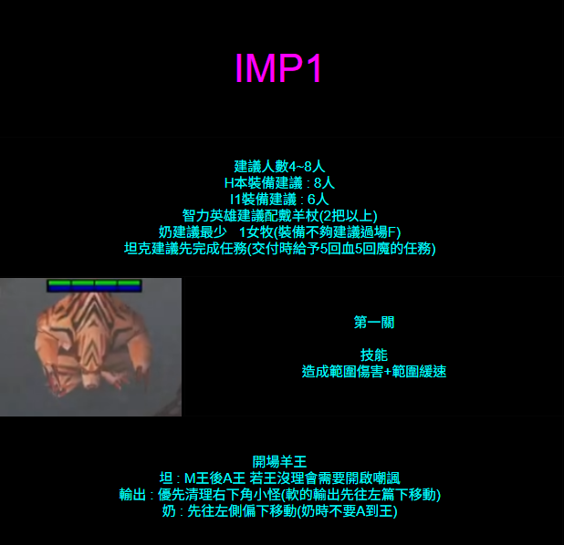
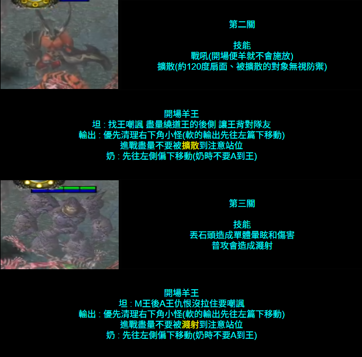
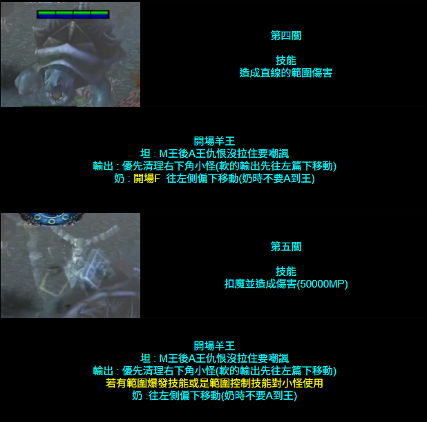
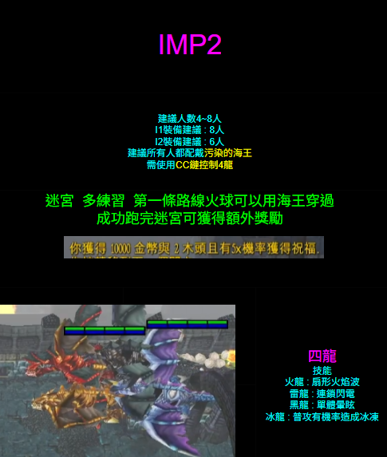
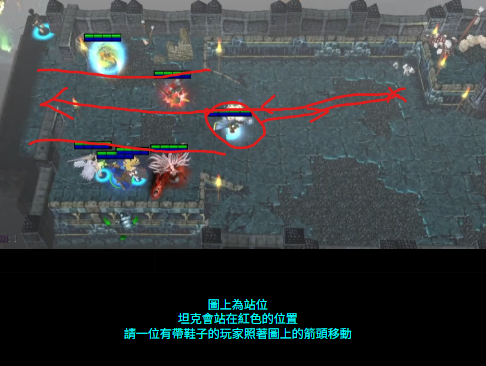
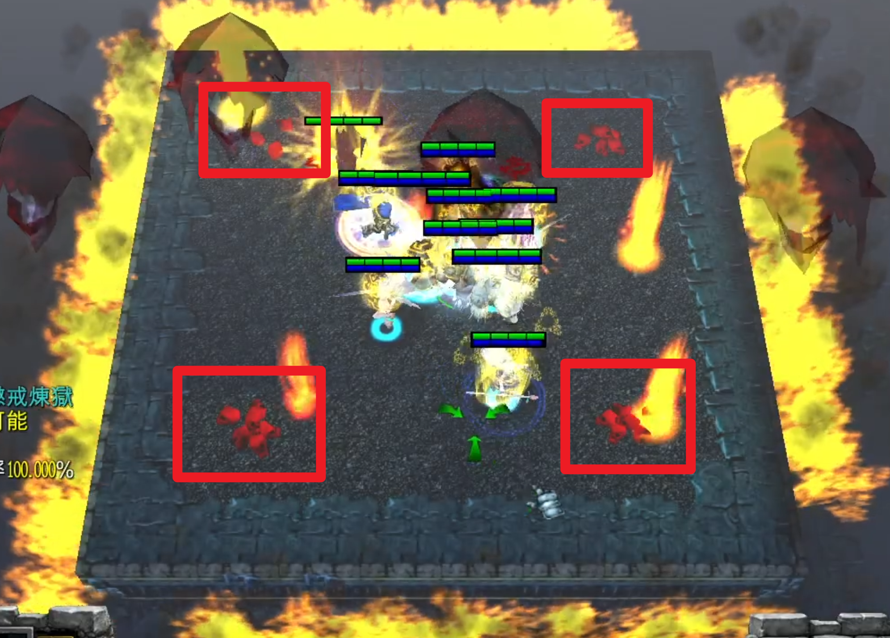
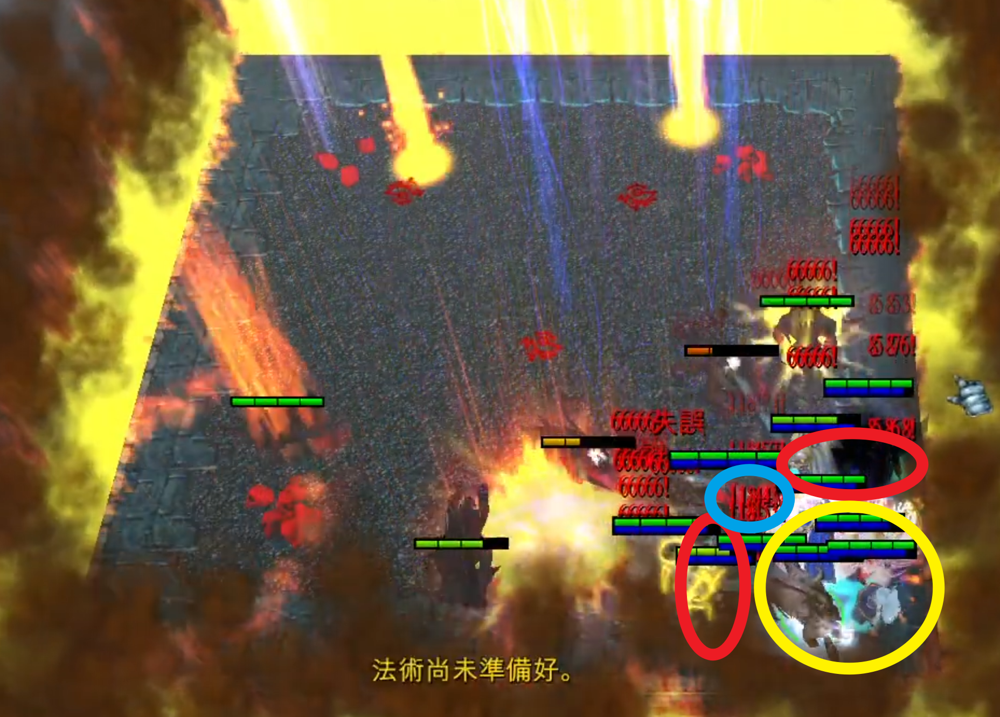

IMP1｜幻像之城
Lv235・7 BOSS・最低配置 1坦 1補 2輸出。
Lv235・7 BOSS・最低配置 1坦 1補 2輸出。
Lv250・迷宮路線與四龍控制。
Lv280・10人團配置、骷髏堆卡位與階段處理。
目前先保留版位，影片與攻略資料待補。
坦：進關先往上走兩步，立刻嘲諷拉住王，把王與大部隊分開。
補：進關先往左走兩步，躲在後方。第 2、4、6 關開場按 F；第 7 關 F 留作救場。
輸出：先往下清完小怪再回頭打 BOSS。第 4 關後遠程小怪很多。

多人靠近會放震地群體傷害。坦克拉住，輸出站坦克對向，補師保持後排。
戰吼會增加敵人約 200% 攻擊力，開場要變羊或嘲諷控制。普攻有濺射，近戰要站坦克對向。
先知：進關放 F + 變羊 BOSS。
遠程怪，會投擲大石頭暈眩。坦克被暈時輸出先停手，避免 OT。
直線水波 AOE，屬魔法傷害。可進關前約 2 秒先開海王星。這關開始遠程小怪增加。
先知：進關放 F。
會法力燃燒，最高約 50,000 MP。遠程小怪多，建議輸出直接交大技能清怪。
緩速箭、高額閃避，平 A 暴擊很痛。遠程小怪多，先知開 F 撐過開場集火。
會鏡像分身 1 變 4。變羊點分身可破幻影，建議至少破 2 個。也可觀察扣血速度判斷真身。


迷宮多練習；第一條路線火球可以用海王穿過。
成功跑完迷宮可獲得額外獎勵。

重點：不要讓四隻龍同時自由輸出，需輪流接 CC。

星光水晶：必帶，增加魔抗。
命運的致盲之光：實用但非必帶，可救坦、救隊友或範圍致盲小怪。

普攻時附近角色會持續受到魔法傷害。
魔法傷害並暈眩約 2 秒。
BOSS 魔抗與普攻傷害會隨階段上升。
小怪會不停生成，普攻有穿刺效果。女牧／光牧進場開 F 無敵；除坦克／近戰外所有人到右下角聚攏。坦克／近戰卡門，利用骷髏堆與角色佔位強迫小怪生成在外面。
站好後按 H 固定位置。關門的人要和裡面的人保持一點距離，避免穿刺波及。

BOSS 出場說話後約 2 秒踐踏。坦克以貼王群體嘲諷打斷並拉去左上角；嘲諷失效後王再次準備踐踏，坦克跑開，等踩完再回去。
拉王期間全員停手，不能放 CC、暈眩、中斷或緩速。火球會優先打最先攻擊 BOSS 的角色，補師不要普攻王。
與 100% 類似，但會召喚大量小怪。所有人停手回右下，坦克／近戰再次卡門。
處理方式：女牧／光牧開 F 無敵硬吃，或使用範圍技能與控場（狙擊 F、殲滅 R、審判沉默、光牧致盲）。清完後坦克再拉王去左上處理踐踏。
處理方式與 75% 相同。
BOSS 開始燒魔，近戰／坦克被 A 一下可能直接沒魔。坦克要在被打前先嘲諷。熊可用回魔戒後再嘲諷；雙坦需分配好誰保留魔力。
機制同前，但 BOSS 魔抗與傷害更高。
50% 踩完後全員靠近 BOSS，打到 25% 王說話時直接爆發擊殺。先開增傷／儲傷，再開主力輸出。
隊伍配置、BOSS 機制、圖片與攻略來源之後再加入。